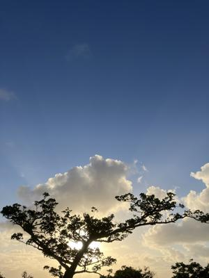
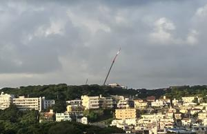

うるがいの話 ある日
最新: 部屋から見える景色【うるがいの話 ある日】とは 一日だけのプログです
『うるがいの話』の最新一日だけのプログで、通信料が少なく経済的だ。カニの画像をクリックすると全ての日付が載る『うるがいの話』サイトを表示します
|
|
【うるがいの話】 うるがい(ｳﾙｶﾞｲ urugai)とは、『もずくがに』の名前でとても大きくなります。 |
|---|---|
|
|
【カミマヤーの話】 猫のことを方言でマヤーといいます。カミマヤー（kamimayaa）とは、神の猫のことです。 |
|
【たながぁの音楽】 たながぁ（ﾀﾅｶﾞｰ tanagaa）とは手長えびのことで、何種類かあり大きいのは車 エビぐらいになります。 |

|
【ぶながぁの話】 ぶながぁ(ﾌﾞﾅｶﾞｰ bunagaa)とは、赤い髪の毛、赤い身体、そして身長は１ｍ２０ｃｍ ぐらい、川の蟹を食べているの目撃された。場所は沖縄県国頭郡大宜味村のと ある村僕の隣近所に住んでいる爺さんから、聞いた話です。 |
|
|
【ギーマの話】 ギーマ(giima)とは、山原の里山に咲くスズランに似た、 花を付けます。実は食べられます、 気が付くと口の周りが紫になっています。 |
2025年09月27日 (土）部屋から見える景色
16:22

お義母さんが住んでいたマンションの部屋のベランダをみると、
洗濯物が干されていた。初めてみる、住み込んでいる証拠である
。
昼過ぎに、金城町あたりからかなりの煙が流れているのが見える
ン、家事か？と思ったが、消防車のサイレンの音が、聞こえない
マ、畑の煙りか。夕方、ジョギングをするといつも混雑している
金城ダム添いの道路の片側が、ガラガラである。しばらくすると
消防車や、酸素ボンベを背負った消防隊員がいる。片側通行で交
通規制をしていた。今朝の新聞で、あの煙が何か分かった。
『消防によりますと２６日午後２時ごろ、那覇市首里金城町で「
住宅から火が出ている」と通行人から通報がありました。』
と。首里城の工事の囲いが、全部撤去されたので首里城が私の部
屋からは、見えなくなった。下は、ジョギング途中で首里城を撮
った写真である。火事があった個所は、右端下部である。
